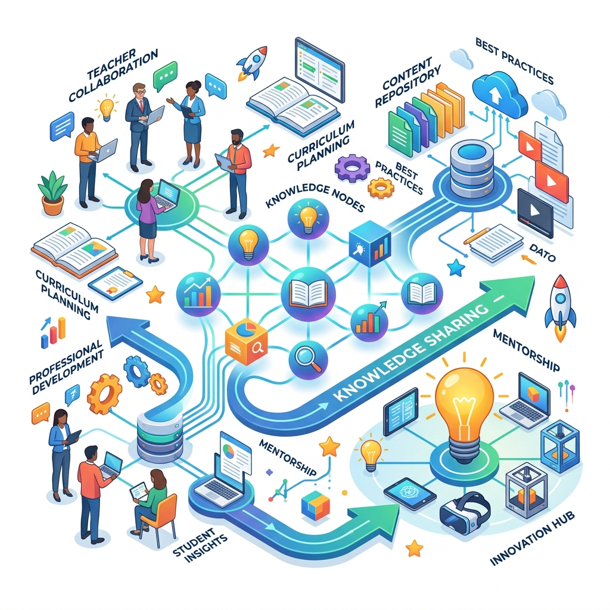

Tu experiencia en el aula es invaluable. Comparte tus estrategias, descubre nuevos recursos y colaboremos para transformar la educación de nuestros estudiantes.

Es un proceso colaborativo diseñado para capturar, organizar y distribuir la sabiduría pedagógica de nuestros docentes. No se trata solo de guardar documentos, sino de conectar a las personas con las ideas que funcionan en el aula.
Herramientas diseñadas para facilitar tu día a día como educador.
Accede a planificaciones, material didáctico, evaluaciones y documentos oficiales organizados por nivel y área.
Explorar ArchivosDescubre metodologías, proyectos y estrategias de aula que han demostrado ser exitosas con nuestros estudiantes.
Ver Casos de ÉxitoConecta con otros profesores, participa en foros de discusión y encuentra mentores para tus próximos proyectos.
Participar en ForosEl conocimiento que no se comparte se pierde. Ayuda a crecer a nuestra comunidad.
Compartir mi primera buena práctica